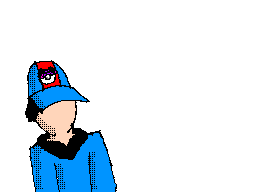
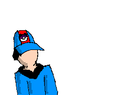
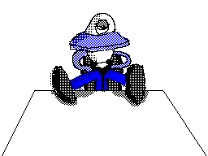

![[ANA JDG] Asterix and the Great Rescue - Megadrive](../vi/6oUXi0ckLmA/default.jpg)
![[ Présentation pour la chaîne Grenier des Joueurs ] JDG Prod](../art/SHAR.6419.583.2.jpg)


J'ai perdu tout respect pour une fille que j'aime beaucoup (par sentiments mais pas de manière rationnelle ou d'origine sexuelle) en l'ayant trop donné de l'attention alors qu'elle ne ressentait rien pour ma jeune personne.
Après un an de recherche,de tentative,de cadeau et de respect,il est temps de tourner la page sur cet amour impossible et qui s'est arrêté le jour où elle m'a accusé de "harcèlement" à ses parents et au directeur de mon collège (ouaip,du "harcèlement",je l'accuserait bien de "abus de c½ur et de charité" mais je suis un garçons,la société est toujours en faveur de la femme ou des gens de peaux différentes).
Enfin bref,il est venu le temps (des rires et des chants) que j'en tire des conclusions et que je les synthétise pour que vous pouvez vous les enseignez dans votre coin ou même les corrigé en fonction de vos vécus!
1) J'ai été trop collant avec elle,j'ai donc côtoyé un extrême pour un peu de reconnaissance mais que dalle donc je forme cette conclusion:
Quand on atteint un extrême,on obtient le contraire que ce qu'on désirait en l'atteignant.
Changeons-ça en proverbe pour faire plus poétique:
Plongez vos mains dans de l'eau glacée et vous les sortirez brûlées.
2)J'ai suivis que mes sentiments sans mettre des gants (hum...je ne l'ai jamais toucher,hein!) et du coup j'ai été contraire à mes valeurs (surtout celle de ne jamais se lier à une personne de l'institution où je travaille) et j'ai été rejeté,j'en conclu que:
Quand on écoute que ses sentiments,on n'est plus sois-même et on est rejeté.
Créons donc l'expression:
Le c½ur n'a pas de yeux et pas de cervelle,inutile de lui donner des responsabilités.
3)J'ai osé me surpasser pour elle,j'ai osé aller au-dessus de mes limites sans que je puisse pensé à ma propre poire,j'ai dépensé de l'argent pour une personne que je ne connais pas. Moi qui est un pure égocentrique égoïste et capitaliste ne supportant pas le gâchis,j'ai changé de manière contraire juste pour une personne.Cette fille,si je suis Super Man,est ma kriptonite donc j'en conclu:
L'amour offre énormément d'énergie à celui qui le ressent mais cette énergie n'est utilisable que pour plaire à la personne tant aimée.
Rendons-ça plus poétique parce que c'est plutôt long:
L'amour est autonome et ne lève pas le petit doigt pour autre chose que sa victime.
Voila,3 petites expressions qui sont axés sur l'amour linéaire (et non "réciproque") qui fera peut-être réfléchir des écrivains et des étudiants de mon âge.
Pour revenir sur mon cas,je ne sais pas quoi faire,quand je balaye une photo de classe avec mon regard,c'est la personne qui attire le plus mon attention,un peu à la manière d'une explosion de lumière ou un geste malsain. C'est gênant de savoir que cette personne est surveillé par mon sub-conscient et que je ne puisse pas le restaurer...l'amour c'est un peu une condamnation divine qui pousse la victime à se suicider ou à se morfondre et se recroquevillé sur lui-même et petit à petit perdre toute notions sociales et éthiques.
Je vais surement redevenir ce que j'étais mais en pire.Plus repoussant,plus indépendant et peut-être enfin silencieux (que je la ferme enfin,ce sera une bénédiction pour mon entourage).
Merci d'avoir lu :D
KidpaddleetcieGlin
Description :
Le Blog d'une personne aillant découvert internet en 2007 qui partage une partie de sa vie mais surtout ses réflexions, ses découvertes et ses cours!
Bon, je ne vous garantit pas que 100% du contenu est fiable mais aux moins je l'approuve! :)
N'oubliez pas de me retrouver sur les autres sites internet du réseaux KidpaddleetcieGlin retrouvable dans le premier article de chaque page. ^-^
Bon, je ne vous garantit pas que 100% du contenu est fiable mais aux moins je l'approuve! :)
N'oubliez pas de me retrouver sur les autres sites internet du réseaux KidpaddleetcieGlin retrouvable dans le premier article de chaque page. ^-^
Je bosse actuellement pour la chaîne Grenier des Joueurs
Son morceau préféré
Retour au blog de KidpaddleetcieGlin
Avant-Propos
Cet essai est dédié à tout les adolescents qui tente de se retrouver dans les valeurs de groupe pré-définis et qui luttent contre la découverte de sois et des autres.
Cet essai aura pour but de vous renseigner sur les conséquences du rejet de sa propre personnalité,de son silence ou de ses mensonges lors de cohésions sociales pour rester intègre.
Axe 1: Pourquoi mentez-vous?
Mentir c'est mal mais on ne ment pas pour rien non plus! Derrière tout malheur se cache une réalité encore plus malheureux qu'on essaye de cacher par des mensonges ou de l'humour!
L'adolescent ment surtout pour éviter des ennuis qu'il a acquit à la suite d'un égarement ou un cas de force majeur qui peut se résumé par "J'étais chez un pote,hier" ou "J'ai oublié mon devoir sur mon bureau à la maison"!
Malheureusement,plus l'adolescent fait son extraverti,plus il est intègre,plus il est réclamé par son groupe et donc moins apte à assumer ses devoirs et sa personnalité.Il se ment à lui-même en croyant qu'être avec plein d' "amis" et de participer avec eux à des activités va l'aider à se connaître!
Le mensonge n'est pas un crime en sois,c'est juste un rideau sur la vérité!
Axe 2: Pourquoi se connaître?
"Se connaître" ou encore "Se définir" permet de reconnaître ses faiblesses,ses forces et donc ses limites et ses facilités.
Se connaître sert donc à ne pas choisir une voie désagréable pour votre pomme lors de choix entre différents chemins de vie ou encore vos partenaires pour un travail de groupe.
Les gens qui ne se connaissent pas sont souvent mal dans leurs peaux car ils ont subis plus de pression sociale que les autres pour s'inscrire dans un groupe.
Savoir qui vous êtes permet donc de bien vous intégrez en société et de gagner de la confiance en sois de jour en jour!SI vous recherchez un emploi,prenez ce qui vous plait le plus,pas ce qui rapporte le plus par mois!
Axe 3: Comment se connaître?
"Se connaître" est une tâche qui se présente ainsi:
-Explorer son passé pour retrouver ses racines,
-Se choisir une personne de son entourage (adulte) pour exemple de personnalité à suivre,
-Discuter avec ses parents et ses amis pour connaître leurs points de vue sur votre personnalité,
-S'accorder des moments de isolement,de repli sur sois-même dans un milieu familier,
-Faire des activités de coopérations avec des personnes différentes,
-Lire des histoires dont vous êtes le héro (ou jouer à un jeu-vidéo où vous contrôlez un personnage que vous avez vous-même créer),
-S'essayer à des activités artistiques (écrire des histoires,dessiner,chanter,faire des jeux-vidéos,...),
La liste est longue mais elles permettent belle et bien de trouver ses limites,ses qualités et défauts!
N'oublier que personne est tout noir ou tout blanc!
Axe 4: Pourquoi changeons-nous de personnalité en fonction des personnes en face de nous?
Lors de discussion avec un ami,votre patron,votre famille ou encore un enfant,vous avez pris l'habitude de changer de peau,de mentalité,de personnalité!
Rassurez-moi,vous ne parlez pas de la même façons à votre patron qu'à votre ami? C'est une question rhétorique,bien sur que non...à moins que votre patron soit votre meilleur ami d'enfance et que vous entretenez aucune retenue parce que vous êtes conscient que ça peut être saoulant de se sentir inférieur à son prochain et qu'il nous le rappelle à chaque rencontre!
Ce changement de personnalité est donc dû à votre affection,votre stress et donc votre confiance en vous!
Il est rare,mais ça existe,des parents qui discute de la politique avec leur enfant de 6 ans comme il existe des amis qui vous vouvoies parce que leurs éducations les ont donné ce comportement.
Il se peut aussi qu'une fille ou un garçons arrive à vous rendre bizarre,passer de quelqu'un de froid à très chaud si vous voyez où je veux en venir!
L' "amour" (dans le sens "âme-s½ur") s'obtient quand les deux tourtereaux arrivent à se voir dans les yeux de l'autre.L'être humain d'occident de la classe moyenne a un ego sur-dimensionné et ce depuis sa tendre enfance où sa famille tournait autour de lui vingt-quatre heures sur vingt-quatre ce qui engendre,lors de l'adolescence,une recherche de ce sur-enveloppement ,de ce cocon si chaleureux où on se souvient avoir eût le corps soulever par des gros bras musclés et poilus ou la tête dans des seins tout doux accompagnés de mots doux.
Quand on sait qui nous sommes,c'est beaucoup plus facile de savoir qui nous faut et qui nous ai compatible!
C'est la clef pour devenir un adulte ouvert et bien dans sa peau dans cette société de l'ère individualiste en période de crise!
Conclusion
Se connaître c'est le passe-droit pour la frontière adolescent-adulte.
Se connaître permet de se reconnaître dans un groupe et ne pas se mentir!
Merci d'avoir lu mon essai jusqu'au bout,j'espère que j'arriverais à le peaufiner jusqu'au jour où il sera assez consistant pour en faire un petit livret qui sera distribuer dans les écoles par le biais d'un service comme le PMS (Psycho-Médico-Sociaux)!
KidpaddleetcieGlin,2015
------------------------------------------------------------------------------------------------------------------------------------------------------Version propre à télécharger au format ZIP:
La nuit du 12 septembre 2015,j'ai sursauter quand j'ai vu la chienne en vacances dans notre logis familial commencer à fixer les petits rongeurs dans leurs cages! Ce sursaut m'a fait tirer subitement le casque du mes oreilles et à tracter violemment le PC vers moi! Le DD Ext qui se trouvait sur la tour est tombé et fût endommagé et illisible!
J'ai dû formater le DD Ext :/
Voila pourquoi je n'ai plus rien.Une bien grande perte pour mes vidéos/images et sons!
Je vais donc devoir refaire un répertoire et recommencer toute mon organisation!
Je serais donc en reconstruction interne pendant un certain moment,le temps de retrouver des sources et d'en recréer!
Si vous avez des sources à me conseiller (Sons,vidéos,images) je suis preneur!
ATTENTION: Les gifs animés ne sont plus utilisable dans mes vidéos pour des soucis de codecs permanent!
Je ne ferais donc plus de vidéos ou d'images pendant ce temps :'( mais je promet de revenir bientôt!
Merci d'avoir lu!
J'ai dû formater le DD Ext :/
Voila pourquoi je n'ai plus rien.Une bien grande perte pour mes vidéos/images et sons!
Je vais donc devoir refaire un répertoire et recommencer toute mon organisation!
Je serais donc en reconstruction interne pendant un certain moment,le temps de retrouver des sources et d'en recréer!
Si vous avez des sources à me conseiller (Sons,vidéos,images) je suis preneur!
ATTENTION: Les gifs animés ne sont plus utilisable dans mes vidéos pour des soucis de codecs permanent!
Je ne ferais donc plus de vidéos ou d'images pendant ce temps :'( mais je promet de revenir bientôt!
Merci d'avoir lu!
Bonjour à tous et bienvenu pour ce tuto qui va vous permettre de améliorer votre organisation en améliorant la navigation dans vos classeurs de cours!
Pour faire ces intercalaires,il vous faut:
-Du papier format A4,
-Un PC,
-Une imprimante (noire et blanc ou couleur,cela n'a pas d'importance),
-Un programme pour créer vos fonds et vos titres (année académique,nom du cours,...),
-Cette adresse: http://www.format-papier-a0-a1-a2-a3-a4-a5.fr/format-a4/dimensions-a4-en-pixels-par-resolutions.php ,
-Un pot de colle,
-Papier carton A4 (épaisseur entre 0.2 centimètres et 0.5 centimètres)
Commençons:
Ouvrez votre PC et double-cliquez sur l'icône de votre application (Paint,Paint.NET,Photoshop,TheGimp,...) et rendez-vous sur l'adresse pour choisir vos dimensions (moi,je prend toujours du 200 dpi donc du 1654 x 2339 pixels),entrez donc ces mesures dans votre logiciel!
Une fois la base créée,vous pouvez vous lancez dans la partie artistique du tuto donc soyez créatif et n'oublier pas que cet intercalaire doit rester correct jusqu'à (au moins) la fin de l'année (40 semaines...c'est très long).
Une fois votre art utilisé à des fins purement esthétique utilisé,employez l'outil "Texte" pour notez les données classiques tel que votre prénom,votre nom,le nom du cours,le nom du professeur et l'année académique (2018-2019 actuellement)!
Une fois l'apparence de votre intercalaire finalisé et donc pas dégueulasse (la honte pendant une année entière,un échec de bon goût),vous pouvez allumer votre imprimante et (comme si vous ne savez pas qu'une imprimante sache faire ça) vous imprimez!
Vous l'auriez surement remarquer...ça fait une feuille de la même épaisseur qu'une feuille de cours...
Vous savez,les gros mangent les petits et donc on va devoir augmenter l'épaisseur de l'intercalaire!
Munissez-vous d'un pot de colle (littéralement,pas de votre pote relou) et de carton au format A4 pour faire une fusion DE MALADE,OH MON DIEU LA COLLE DU POT DE COLLE PERMET À VOTRE FEUILLE D'INTERCALAIRE ET LE BANAL CARTON DE DEVENIR UNE ENTITÉ SUPÉRIEURE...Un intercalaire épais!
Voila,c'est finit...vous pouvez mettre aussi des petits onglets (post-it coupées en deux où vous avez écrit le nom du cours dessus) sur le sens de la longueur de l'intercalaire!Cela vous permettra de naviguer de manière plus ergonomique et plus rapide dans votre farde de cours!
Merci d'avoir lu et j'espère que cela vous aidera ^^
Pour faire ces intercalaires,il vous faut:
-Du papier format A4,
-Un PC,
-Une imprimante (noire et blanc ou couleur,cela n'a pas d'importance),
-Un programme pour créer vos fonds et vos titres (année académique,nom du cours,...),
-Cette adresse: http://www.format-papier-a0-a1-a2-a3-a4-a5.fr/format-a4/dimensions-a4-en-pixels-par-resolutions.php ,
-Un pot de colle,
-Papier carton A4 (épaisseur entre 0.2 centimètres et 0.5 centimètres)
Commençons:
Ouvrez votre PC et double-cliquez sur l'icône de votre application (Paint,Paint.NET,Photoshop,TheGimp,...) et rendez-vous sur l'adresse pour choisir vos dimensions (moi,je prend toujours du 200 dpi donc du 1654 x 2339 pixels),entrez donc ces mesures dans votre logiciel!
Une fois la base créée,vous pouvez vous lancez dans la partie artistique du tuto donc soyez créatif et n'oublier pas que cet intercalaire doit rester correct jusqu'à (au moins) la fin de l'année (40 semaines...c'est très long).
Une fois votre art utilisé à des fins purement esthétique utilisé,employez l'outil "Texte" pour notez les données classiques tel que votre prénom,votre nom,le nom du cours,le nom du professeur et l'année académique (2018-2019 actuellement)!
Une fois l'apparence de votre intercalaire finalisé et donc pas dégueulasse (la honte pendant une année entière,un échec de bon goût),vous pouvez allumer votre imprimante et (comme si vous ne savez pas qu'une imprimante sache faire ça) vous imprimez!
Vous l'auriez surement remarquer...ça fait une feuille de la même épaisseur qu'une feuille de cours...
Vous savez,les gros mangent les petits et donc on va devoir augmenter l'épaisseur de l'intercalaire!
Munissez-vous d'un pot de colle (littéralement,pas de votre pote relou) et de carton au format A4 pour faire une fusion DE MALADE,OH MON DIEU LA COLLE DU POT DE COLLE PERMET À VOTRE FEUILLE D'INTERCALAIRE ET LE BANAL CARTON DE DEVENIR UNE ENTITÉ SUPÉRIEURE...Un intercalaire épais!
Voila,c'est finit...vous pouvez mettre aussi des petits onglets (post-it coupées en deux où vous avez écrit le nom du cours dessus) sur le sens de la longueur de l'intercalaire!Cela vous permettra de naviguer de manière plus ergonomique et plus rapide dans votre farde de cours!
Merci d'avoir lu et j'espère que cela vous aidera ^^
Voici où j'ai découvert ma...découverte! http://travcorp.deviantart.com/art/hitler-playstation-5051843
Voila le ScreenShot pour garder la trace si la page est supprimée:

Commençons donc par quelque questions rhétoriques:
La date/année du document: 2004
De quoi parle du document: De l'injustice de la PS2 face à ses concurrents!
Avis de l'auteur face au sujet/thème du document: Défavorable!
Bon,comme c'est en anglais,je vais faire une traduction simultanée avec Google Traduction et je vais faire MA VERSION CORRIGÉE juste après :3
1) La version originale:
"well... i may be the last to know.... mainly because i was not into the console scene in 2001-ish, but this is my official responce to the company that just beat Microsoft on my hate list.
In 2001, there was a company named bleem. this company created playstation emulator for the PC called (imagine that) bleem. At E3 later that year they announced a port of bleem to the Sega Dreamcast, which was to be called Bleemcast. Bleemcast was said to support more than 400 titles, and display those titles in 640x480, with completely rebuffered textures so games wouldn't look like crap (The PS2 can't even do that). Sony was outraged, and over the course of bleem's existence brought them to court several times. Every court case was won by bleem. Sony's official word was that Bleemcast wouldn't be popular, but Grand Turismo 2, the first game that was emulated by Bleemcast, on it's first week on the shelves at Electronics Beautique ousild the brand new Grand Turismo 3, and even the PS2 itself. Sony had to take a second course of action.
Sony contacted all major retail stores and told them that if they did not stop selling Bleem products, thy would have all of their sony stock pulled, and would no longer sell PS, or PS2 consoles or games. This, of course, worked. Sony was happy once again, untill that Christmas, when critics and developers were both saying that the Dreamcast would have the strongest christmas lineup, so they made the same threat to retailers, either push the Dreamcast's linup aside for the PS2's shoddy christmas lineup, or have all the PS, and PS2 console and game selling privelages revoked. And once again, unfortunately, it worked, and so goes the story of how the dreamcast died off, and then Sega along with it.
Now we must see beautiful games like Sonic Heros on the lowsy fucking PS2, when it should be on the Dreamcast, or at very least exclusive to Gamecube... oh well, at least sony doesn't get any money out of them..... so... boycott the Playstation 2, buy a Gamecube, and if you can find one, a Sega Dreamcast.
If you read this and still like Sony, then just look at the picture, and see your leader, a totalitarian facist dictator, welcome to Sony Enterprises. "
2)Version de Google Traduction:
"Eh bien ... je peux être le dernier à savoir .... surtout parce que je ne étais pas dans la scène de la console en 2001-ish, mais ceci est mon responce officielle à la société qui vient de battre Microsoft sur ma liste de haine.
En 2001, il y avait une société nommée Bleem. cette société créée PlayStation émulateur pour PC appelé (imaginez que) Bleem. Lors de l'E3 plus tard cette année, ils ont annoncé un port de Bleem à la Dreamcast de Sega, qui devait être appelé Bleemcast. Bleemcast a été dit pour soutenir plus de 400 titres, et afficher ces titres en 640x480, avec des textures complètement rebuffered sorte jeux ne regarderaient pas comme de la merde (La PS2 ne peut même pas le faire). Sony a été outragé, et au cours de l'existence de Bleem leur portée devant les tribunaux à plusieurs reprises. Chaque procès a été remporté par Bleem. Mot officiel de Sony était que Bleemcast ne serait pas populaire, mais de Grand Turismo 2, le premier jeu qui a été imité par Bleemcast, sur son première semaine sur les tablettes au Electronique Beautique ousild la marque nouveau Grand Turismo 3, et même la PS2 elle-même. Sony a dû prendre un deuxième plan d'action.
Sony a contacté tous les grands magasins de détail et leur a dit que si ils ne cesser de vendre des produits Bleem, ta aurait tout de leur sony Stock tiré, et ne vendrait plus de consoles PS2 ou des jeux PS, ou. Ceci, bien sûr, travaillé. Sony était heureux une fois de plus, jusqu'à ce que Noël, quand les critiques et les développeurs ont tous deux disent que la Dreamcast aurait la plus forte lineup de Noël, alors ils ont fait la même menace pour les détaillants, soit pousser la LINUP de la Dreamcast de côté pour la gamme de noël mauvaise qualité de la PS2, ou avoir tout le PS, et la console PS2 et la vente de jeu privelages révoqués. Et encore une fois, malheureusement, il a travaillé, et ainsi va l'histoire de la façon dont la Dreamcast est mort hors tension, puis Sega avec elle.
Maintenant, nous devons voir de beaux jeux comme Sonic Heros sur le lowsy putain PS2, alors qu'elle devrait être sur la Dreamcast, ou à tout le moins exclusive à Gamecube ... eh bien, au moins Sony ne peut pas faire de l'argent sur eux .. ... alors ... boycotter la Playstation 2, Gamecube acheter un, et si vous pouvez en trouver un, une Sega Dreamcast.
Si vous lisez ceci et encore comme Sony, puis il suffit de regarder l'image, et de voir votre chef, un dictateur fasciste totalitaire, bienvenue à Sony Enterprises."
3)Ma version corrigé
"Eh bien ... je suis peux être le dernier con à le savoir .... Surtout parce que je n'étais pas dans la scène des consoles en 2001- aujourd'hui, mais ceci est ma réponse officielle à la société qui vient de devancer Microsoft sur ma liste de haine.
En 2001, il y avait une société nommée Bleem. Cette société créée un émulateur PlayStation pour PC appelé (tout simplement) Bleem. Lors de l'E3 de cette année, ils ont annoncé un port de Bleem à la Dreamcast de Sega, qui devait être appelé Bleemcast. Bleemcast a été cité pour soutenir plus de 400 titres, et afficher ces titres en 640x480, avec des textures complètement retravaillé de sorte que les jeux ne se regarderaient pas comme de la merde (La PS2 ne peut même pas rivaliser). Sony a été outragé, et au cours de l'existence de Bleem qu'ils ont porté l'affaire aux tribunaux à plusieurs reprises. Chaque procès a été remporté par Bleem. La remarque officiel de Sony était que Bleemcast ne serait pas populaire, mais de Grand Turismo 2, le premier jeu qui a été imité sur Bleemcast, sur sa première semaine sur les statistiques aux Electronics Beautique dépasse le rendement du nouveau Grand Turismo 3, et même la PS2 elle-même. Sony a dû prendre un deuxième plan d'action.
Sony a contacté tous les grands magasins de jeux-vidéos et leur a dit que si ils ne cessaient pas de vendre des produits Bleem, ils auraient tout les produits de Sony en stock retiré, et ne vendrait plus de consoles PS2 ou des jeux PS, ou. Ceci, bien sûr, travaillé. Sony était heureux une fois de plus, jusqu'à ce Noël, quand les critiques et les développeurs ont tous deux dits que la Dreamcast aurait la plus forte lineup de Noël, alors ils ont fait la même menace que pour les magasins de jeux-vidéos, soit pousser la LINUP de la Dreamcast de côté pour la gamme de Noël de mauvaise qualité de la PS2, ou avoir tout la PS, et la console PS2 et la vente de jeu privilégiés révoqués. Et encore une fois, malheureusement, Sony a réussi, et ainsi va l'histoire de la façon dont la Dreamcast est morte hors tension, puis Sega avec elle.
Maintenant, nous devons voir de beaux jeux comme Sonic Heros sur la lente, putain de PS2, alors qu'elle devrait être sur la Dreamcast, ou au moins exclusive à la GameCube ... eh bien, au moins Sony ne peut pas faire de l'argent sur eux .. ... alors ... boycotter la Playstation 2, acheter une GameCube, et si vous pouvez en trouver une, une Sega Dreamcast.
Si vous lisez ceci et que vous défendez encore Sony après, il suffit de regarder l'image, et de voir votre chef, un dictateur fasciste totalitaire, bienvenue à l'entreprise Sony."
4)Analyse
Voila,quand je disais que c'était un avis défavorable (c'est surtout l'image qui m'a aidé en faîtes) mais là n'est pas la question!
Allons donc droit au but,je suis d'accord avec sa vision car elle est bien argumentée...et on ressent bien un Pro-SEGA ou Pro-Nintendo qui souffre!
L'histoire de Bleem m'a semblé exagéré mais un rapide passage sur la page Wikipédia m'a fait croire à cette histoire!
"Face à une très forte pression de la part de Sony (et tout comme pour VGS) la compagnie Bleem, qui était poursuivit parce que le logiciel était capable de faire fonctionner des jeux sur un autre support que la PlayStation qui était encore en activité à cette période, a finalement cédé et a fermé."
C'est choquant mais c'est pas tout car le fait que Sony menace de retirer tout le stock de produit de leur marque dans les magasins de jeux-vidéos,si ils vendent des produits concurrents,me fait mal parce que c'est de la concurrence déloyale!
La PS2 est illégitime de sa réussite pour ça!
Merci d'avoir lu :)
Voila le ScreenShot pour garder la trace si la page est supprimée:
Commençons donc par quelque questions rhétoriques:
La date/année du document: 2004
De quoi parle du document: De l'injustice de la PS2 face à ses concurrents!
Avis de l'auteur face au sujet/thème du document: Défavorable!
Bon,comme c'est en anglais,je vais faire une traduction simultanée avec Google Traduction et je vais faire MA VERSION CORRIGÉE juste après :3
1) La version originale:
"well... i may be the last to know.... mainly because i was not into the console scene in 2001-ish, but this is my official responce to the company that just beat Microsoft on my hate list.
In 2001, there was a company named bleem. this company created playstation emulator for the PC called (imagine that) bleem. At E3 later that year they announced a port of bleem to the Sega Dreamcast, which was to be called Bleemcast. Bleemcast was said to support more than 400 titles, and display those titles in 640x480, with completely rebuffered textures so games wouldn't look like crap (The PS2 can't even do that). Sony was outraged, and over the course of bleem's existence brought them to court several times. Every court case was won by bleem. Sony's official word was that Bleemcast wouldn't be popular, but Grand Turismo 2, the first game that was emulated by Bleemcast, on it's first week on the shelves at Electronics Beautique ousild the brand new Grand Turismo 3, and even the PS2 itself. Sony had to take a second course of action.
Sony contacted all major retail stores and told them that if they did not stop selling Bleem products, thy would have all of their sony stock pulled, and would no longer sell PS, or PS2 consoles or games. This, of course, worked. Sony was happy once again, untill that Christmas, when critics and developers were both saying that the Dreamcast would have the strongest christmas lineup, so they made the same threat to retailers, either push the Dreamcast's linup aside for the PS2's shoddy christmas lineup, or have all the PS, and PS2 console and game selling privelages revoked. And once again, unfortunately, it worked, and so goes the story of how the dreamcast died off, and then Sega along with it.
Now we must see beautiful games like Sonic Heros on the lowsy fucking PS2, when it should be on the Dreamcast, or at very least exclusive to Gamecube... oh well, at least sony doesn't get any money out of them..... so... boycott the Playstation 2, buy a Gamecube, and if you can find one, a Sega Dreamcast.
If you read this and still like Sony, then just look at the picture, and see your leader, a totalitarian facist dictator, welcome to Sony Enterprises. "
2)Version de Google Traduction:
"Eh bien ... je peux être le dernier à savoir .... surtout parce que je ne étais pas dans la scène de la console en 2001-ish, mais ceci est mon responce officielle à la société qui vient de battre Microsoft sur ma liste de haine.
En 2001, il y avait une société nommée Bleem. cette société créée PlayStation émulateur pour PC appelé (imaginez que) Bleem. Lors de l'E3 plus tard cette année, ils ont annoncé un port de Bleem à la Dreamcast de Sega, qui devait être appelé Bleemcast. Bleemcast a été dit pour soutenir plus de 400 titres, et afficher ces titres en 640x480, avec des textures complètement rebuffered sorte jeux ne regarderaient pas comme de la merde (La PS2 ne peut même pas le faire). Sony a été outragé, et au cours de l'existence de Bleem leur portée devant les tribunaux à plusieurs reprises. Chaque procès a été remporté par Bleem. Mot officiel de Sony était que Bleemcast ne serait pas populaire, mais de Grand Turismo 2, le premier jeu qui a été imité par Bleemcast, sur son première semaine sur les tablettes au Electronique Beautique ousild la marque nouveau Grand Turismo 3, et même la PS2 elle-même. Sony a dû prendre un deuxième plan d'action.
Sony a contacté tous les grands magasins de détail et leur a dit que si ils ne cesser de vendre des produits Bleem, ta aurait tout de leur sony Stock tiré, et ne vendrait plus de consoles PS2 ou des jeux PS, ou. Ceci, bien sûr, travaillé. Sony était heureux une fois de plus, jusqu'à ce que Noël, quand les critiques et les développeurs ont tous deux disent que la Dreamcast aurait la plus forte lineup de Noël, alors ils ont fait la même menace pour les détaillants, soit pousser la LINUP de la Dreamcast de côté pour la gamme de noël mauvaise qualité de la PS2, ou avoir tout le PS, et la console PS2 et la vente de jeu privelages révoqués. Et encore une fois, malheureusement, il a travaillé, et ainsi va l'histoire de la façon dont la Dreamcast est mort hors tension, puis Sega avec elle.
Maintenant, nous devons voir de beaux jeux comme Sonic Heros sur le lowsy putain PS2, alors qu'elle devrait être sur la Dreamcast, ou à tout le moins exclusive à Gamecube ... eh bien, au moins Sony ne peut pas faire de l'argent sur eux .. ... alors ... boycotter la Playstation 2, Gamecube acheter un, et si vous pouvez en trouver un, une Sega Dreamcast.
Si vous lisez ceci et encore comme Sony, puis il suffit de regarder l'image, et de voir votre chef, un dictateur fasciste totalitaire, bienvenue à Sony Enterprises."
3)Ma version corrigé
"Eh bien ... je suis peux être le dernier con à le savoir .... Surtout parce que je n'étais pas dans la scène des consoles en 2001- aujourd'hui, mais ceci est ma réponse officielle à la société qui vient de devancer Microsoft sur ma liste de haine.
En 2001, il y avait une société nommée Bleem. Cette société créée un émulateur PlayStation pour PC appelé (tout simplement) Bleem. Lors de l'E3 de cette année, ils ont annoncé un port de Bleem à la Dreamcast de Sega, qui devait être appelé Bleemcast. Bleemcast a été cité pour soutenir plus de 400 titres, et afficher ces titres en 640x480, avec des textures complètement retravaillé de sorte que les jeux ne se regarderaient pas comme de la merde (La PS2 ne peut même pas rivaliser). Sony a été outragé, et au cours de l'existence de Bleem qu'ils ont porté l'affaire aux tribunaux à plusieurs reprises. Chaque procès a été remporté par Bleem. La remarque officiel de Sony était que Bleemcast ne serait pas populaire, mais de Grand Turismo 2, le premier jeu qui a été imité sur Bleemcast, sur sa première semaine sur les statistiques aux Electronics Beautique dépasse le rendement du nouveau Grand Turismo 3, et même la PS2 elle-même. Sony a dû prendre un deuxième plan d'action.
Sony a contacté tous les grands magasins de jeux-vidéos et leur a dit que si ils ne cessaient pas de vendre des produits Bleem, ils auraient tout les produits de Sony en stock retiré, et ne vendrait plus de consoles PS2 ou des jeux PS, ou. Ceci, bien sûr, travaillé. Sony était heureux une fois de plus, jusqu'à ce Noël, quand les critiques et les développeurs ont tous deux dits que la Dreamcast aurait la plus forte lineup de Noël, alors ils ont fait la même menace que pour les magasins de jeux-vidéos, soit pousser la LINUP de la Dreamcast de côté pour la gamme de Noël de mauvaise qualité de la PS2, ou avoir tout la PS, et la console PS2 et la vente de jeu privilégiés révoqués. Et encore une fois, malheureusement, Sony a réussi, et ainsi va l'histoire de la façon dont la Dreamcast est morte hors tension, puis Sega avec elle.
Maintenant, nous devons voir de beaux jeux comme Sonic Heros sur la lente, putain de PS2, alors qu'elle devrait être sur la Dreamcast, ou au moins exclusive à la GameCube ... eh bien, au moins Sony ne peut pas faire de l'argent sur eux .. ... alors ... boycotter la Playstation 2, acheter une GameCube, et si vous pouvez en trouver une, une Sega Dreamcast.
Si vous lisez ceci et que vous défendez encore Sony après, il suffit de regarder l'image, et de voir votre chef, un dictateur fasciste totalitaire, bienvenue à l'entreprise Sony."
4)Analyse
Voila,quand je disais que c'était un avis défavorable (c'est surtout l'image qui m'a aidé en faîtes) mais là n'est pas la question!
Allons donc droit au but,je suis d'accord avec sa vision car elle est bien argumentée...et on ressent bien un Pro-SEGA ou Pro-Nintendo qui souffre!
L'histoire de Bleem m'a semblé exagéré mais un rapide passage sur la page Wikipédia m'a fait croire à cette histoire!
"Face à une très forte pression de la part de Sony (et tout comme pour VGS) la compagnie Bleem, qui était poursuivit parce que le logiciel était capable de faire fonctionner des jeux sur un autre support que la PlayStation qui était encore en activité à cette période, a finalement cédé et a fermé."
C'est choquant mais c'est pas tout car le fait que Sony menace de retirer tout le stock de produit de leur marque dans les magasins de jeux-vidéos,si ils vendent des produits concurrents,me fait mal parce que c'est de la concurrence déloyale!
La PS2 est illégitime de sa réussite pour ça!
Merci d'avoir lu :)
Avant propos: Boredguy est un personnage un peu handicapé car il n'a pas vraiment une joie de vivre et ne tente pas de s'élever parce que son créateur l'a créé sans conviction...juste pour se sentir intégré à un groupe !
Notre récit commence là où tout les récits des Ploucs commencent,au Royaume Champignon.
FanYoshiBleu préparait le jeu "Ploucs Quest" pendant que Glin préparait ses fan-arts de légendes alors que Pokémon_Master était la main dans son slip en train de chercher ses clés pour ouvrir la porte de sa maison.Le Doc' regardait un reportage sur la NES et Boredguy parlait tout seul dans son coin.
Fan' rassemble les Ploucs et le Doc' pour demander si les persos leurs plaisent ce que tout le monde affirmèrent...tous sauf Bored' qui n'aimait pas son perso. Fan',un peu troublé par cette révélation retourna faire les sprites de Boredguy et y passa 5 jours avant de le re-présenté à Bored' qui n'y trouva toujours pas son compte.
Fan' y repassa encore et encore du temps dessus et enfin Bored' l'accepta.
Fan' posa une nouvelle question aux Ploucs et au Doc',l'histoire de leurs personnages.
L'exercice était simple,écrire une histoire pour introduire le personnage dans l'univers des Ploucs,pour savoir d'où proviennent ses pouvoirs et sa personnalité.Tout le monde créèrent des histoires plus ou moins longues avec plein de détails marrants ou même intelligent et donc assez complexe...mais Boredguy fait une nouvelle foi preuve de insolence,un manque de respect que FanYoshiBleu ne s'en remettra jamais.
Cet acte odieux fût de n'avoir écrit que quatre lignes qui disait en gros:
"Boredguy c'est un mec qui,un jour, se leva et trouva une cravate.Maintenant partez,vous avec mieux à faire que de lire mon histoire!".
Fan' avait la rage,la diarrhée (ça fait super chier!) et cela n'allait pas s'arranger.
Fan', pour se venger,écrivit la fin de Boredguy,actuellement pas encore dans le jeu
"Ploucs Quest" si ce jeu voit le jour car elle est seul à y travailler vu que le Doc' habite en France,Pokémon_Master a désormais les deux là où vous le pensez,Boredguy déprime et Glin est un simplet ayant deux mains gauches.
La fin de Boredguy se passe ainsi: "Les Ploucs passent dans un chemin pleins de cailloux et Boredguy glisse sur une pierre,tombe et se fracasse la tête sur le sol...FIN".
Voila,c'est ça la fin de Boredguy!
Notre récit commence là où tout les récits des Ploucs commencent,au Royaume Champignon.
FanYoshiBleu préparait le jeu "Ploucs Quest" pendant que Glin préparait ses fan-arts de légendes alors que Pokémon_Master était la main dans son slip en train de chercher ses clés pour ouvrir la porte de sa maison.Le Doc' regardait un reportage sur la NES et Boredguy parlait tout seul dans son coin.
Fan' rassemble les Ploucs et le Doc' pour demander si les persos leurs plaisent ce que tout le monde affirmèrent...tous sauf Bored' qui n'aimait pas son perso. Fan',un peu troublé par cette révélation retourna faire les sprites de Boredguy et y passa 5 jours avant de le re-présenté à Bored' qui n'y trouva toujours pas son compte.
Fan' y repassa encore et encore du temps dessus et enfin Bored' l'accepta.
Fan' posa une nouvelle question aux Ploucs et au Doc',l'histoire de leurs personnages.
L'exercice était simple,écrire une histoire pour introduire le personnage dans l'univers des Ploucs,pour savoir d'où proviennent ses pouvoirs et sa personnalité.Tout le monde créèrent des histoires plus ou moins longues avec plein de détails marrants ou même intelligent et donc assez complexe...mais Boredguy fait une nouvelle foi preuve de insolence,un manque de respect que FanYoshiBleu ne s'en remettra jamais.
Cet acte odieux fût de n'avoir écrit que quatre lignes qui disait en gros:
"Boredguy c'est un mec qui,un jour, se leva et trouva une cravate.Maintenant partez,vous avec mieux à faire que de lire mon histoire!".
Fan' avait la rage,la diarrhée (ça fait super chier!) et cela n'allait pas s'arranger.
Fan', pour se venger,écrivit la fin de Boredguy,actuellement pas encore dans le jeu
"Ploucs Quest" si ce jeu voit le jour car elle est seul à y travailler vu que le Doc' habite en France,Pokémon_Master a désormais les deux là où vous le pensez,Boredguy déprime et Glin est un simplet ayant deux mains gauches.
La fin de Boredguy se passe ainsi: "Les Ploucs passent dans un chemin pleins de cailloux et Boredguy glisse sur une pierre,tombe et se fracasse la tête sur le sol...FIN".
Voila,c'est ça la fin de Boredguy!
![[Mon Avis sur]Pixels,le film de 2015!](../5252/79895252/pics/3256323456_1_3_2amp0dmt.jpg)
Bon,mon avis est assez compliqué dans le sens où je suis un retro' pur-jus et que je n'aime pas Sony :)
Sans vouloir paraître un imbécile heureux,j'ai aimé ce film car c'est un film ayant un scénario bien séquencé et donc que le schéma est carrément énoncé dans le film! Les personnages sont justes...développé juste assez pour un seul film.
Les effets-spéciaux sont bien...Blender + Adobe After Effect !
Les jeux-vidéos présents dans le film m'ont tous parût respectés même si la quantité de "sprite" affiché à chaque jump-cut sont tellement légions que le film deviens,vers la fin,un "Où est Charlie",ce qui est amusant!
Les blagues...il faut suivre le film pour les comprendre et ne pas les prendre avec des "pincettes"!
Le film me semble court,je ne me suis pas ennuyer car je jouais à chercher Mario partout (il est vers la fin,pendant le bordel de pixel) et à suivre les dialogues à la recherche d'une blague (IL Y EN PLEIN MAIS IL FAUT SUIVRE LES DIALOGUES JUSQU'AU BOUT SANS OUBLIER APRÈS DE L'ACTION!!!!)!
Sinon,j'ai rechercher mais il semblerait que PaperBoy (toujours vers la fin du film) soit né en 1984 alors que l'envoie des enregistrements aux Aliens se soit fait en 1982...INCOHÉRENCE!!!!
Voila,j'ai aimé ce film pour tout ça...on verra si j'ai eût raison de l'aimer autant mais je lui met un 7/10 parce que j'aurais aimer plus de développement sur les personnages pour une éventuel suite ou une version BD/Dessin-Animé !
Le hic est que je pense qu'il est possible le système du Pac-Man du film et le Centipede à deux joueurs peuvent se faire en réels jeux-vidéos! (Mode dans GTA vu que c'est dans la ville de New-York que le Pac Man se passe!)!
Merci de m'avoir lu!
Voila le Wiki' de Pixels: https://fr.wikipedia.org/wiki/Pixels_(film,_2015)
Vous confronter mon avis au votre dans les commentaires de cet article,vous avez le droit de le faire en mode "anonyme"!
Bonjour cher lecteur,comme indiqué dans le titre,je vais te parler des vidéos filmées en direct!
Tout d'abord,il faut savoir que j'ai déjà regarder des "lives" sur la production d'une YouTube Poop ( de Yoonns ) et de Assassin's Creed Black Flag ( de Hooper mais la vidéo a été supprimée).
Parlons de l'ambiance:
Le créateur du live passe généralement de 2 à 20 minutes pour attendre du public...c'est désagréable pour ceux qui attende car il y a une autre étape après qui est encore plus chiante,c'est l'étape où il regarde si tout le monde l'entend bien et si le visuel n'est pas trop dégeu' pour nous (ça peut prendre un bon quart d'heure si les gens ne troll pas...avec un peu de chance)!
Donc le créateur devient vite saoulant car il s'occupe TROP de nous et c'est aussi embêtant car si il fait les même actions en OffLine,ça lui prend 5 minutes alors qu'il en prend 30 en Online!
Le "liver" est lent,parle tout le temps et répond aux questions du live le plus souvent possible.
Le public s'adresse donc à la communauté dans le piti forum qui a tendance à ralentir quand une dizaine de personne poste des messages en même temps et que les gens s'adresse autant au liver qu'aux autres membres du forum ce qui complique le suivi de l'action!
Si le live dur trop longtemps (3h et plus),les gens se disconnect et d'autres reste pour troller!
Vous voyez bien que c'est souvent la guerre!
Parlons maintenant du contenu des lives:
Ce que j'aime (oui,car c'est mon avis avant tout) dans les vidéos,c'est le soucis du détail,le rythme,la dynamique et donc LE MONTAGE!!!!
Pourtant,du montage dans un live...cela serait paradoxale!
Pour que naquit un montage,il faut avoir une vidéo brute à montée...peut-on considéré un live comme une vidéo brute? OUI,C'EST CELA LE PROBLÈME!!!!
Mais le contenu varie selon le liver qui doit s'organiser pour fournir des informations pertinentes et bien dosé ses allés-venus sur le forum pour répondre à des questions et se replonger dans son sujet.
Avantages d'un live
La "proximité avec les membres de sa communauté" peut "permettre la participation de ceux-ci" mais aussi "leur apprendre des choses" tout en leurs donnant "la possibilité de poser des questions au moment le plus propice".
Le plus souvent,c'est gratuit!
Désavantage d'un live
La "capture en temps réel" peut "faire stresser le liver" ce qui "peut entraîner une fuite de donnée personnelle" et "permettre une entrée dans un cercle de harcèlement au quotidien"
Pas le temps de faire pipi (c'est un désavantage de l'accaparement continu)!
Avis général de Glin Kidpaddleetcie
C'est seulement chouette quand on sait gérer un timing et qu'on a un sujet assez intéressent à exploiter!
N'oublier pas que vous êtes plus ouvert et du coup plus fragile lors d'un live car vous ouvrez une faille entre votre PC et internet (les ordinateurs des autres quoi!) ce qui vous rends vulnérables durant toute la durée du live!
Merci de m'avoir lu et j'espère que vous saurez faire des vidéos en direct comme des grands!
Tout d'abord,il faut savoir que j'ai déjà regarder des "lives" sur la production d'une YouTube Poop ( de Yoonns ) et de Assassin's Creed Black Flag ( de Hooper mais la vidéo a été supprimée).
Parlons de l'ambiance:
Le créateur du live passe généralement de 2 à 20 minutes pour attendre du public...c'est désagréable pour ceux qui attende car il y a une autre étape après qui est encore plus chiante,c'est l'étape où il regarde si tout le monde l'entend bien et si le visuel n'est pas trop dégeu' pour nous (ça peut prendre un bon quart d'heure si les gens ne troll pas...avec un peu de chance)!
Donc le créateur devient vite saoulant car il s'occupe TROP de nous et c'est aussi embêtant car si il fait les même actions en OffLine,ça lui prend 5 minutes alors qu'il en prend 30 en Online!
Le "liver" est lent,parle tout le temps et répond aux questions du live le plus souvent possible.
Le public s'adresse donc à la communauté dans le piti forum qui a tendance à ralentir quand une dizaine de personne poste des messages en même temps et que les gens s'adresse autant au liver qu'aux autres membres du forum ce qui complique le suivi de l'action!
Si le live dur trop longtemps (3h et plus),les gens se disconnect et d'autres reste pour troller!
Vous voyez bien que c'est souvent la guerre!
Parlons maintenant du contenu des lives:
Ce que j'aime (oui,car c'est mon avis avant tout) dans les vidéos,c'est le soucis du détail,le rythme,la dynamique et donc LE MONTAGE!!!!
Pourtant,du montage dans un live...cela serait paradoxale!
Pour que naquit un montage,il faut avoir une vidéo brute à montée...peut-on considéré un live comme une vidéo brute? OUI,C'EST CELA LE PROBLÈME!!!!
Mais le contenu varie selon le liver qui doit s'organiser pour fournir des informations pertinentes et bien dosé ses allés-venus sur le forum pour répondre à des questions et se replonger dans son sujet.
Avantages d'un live
La "proximité avec les membres de sa communauté" peut "permettre la participation de ceux-ci" mais aussi "leur apprendre des choses" tout en leurs donnant "la possibilité de poser des questions au moment le plus propice".
Le plus souvent,c'est gratuit!
Désavantage d'un live
La "capture en temps réel" peut "faire stresser le liver" ce qui "peut entraîner une fuite de donnée personnelle" et "permettre une entrée dans un cercle de harcèlement au quotidien"
Pas le temps de faire pipi (c'est un désavantage de l'accaparement continu)!
Avis général de Glin Kidpaddleetcie
C'est seulement chouette quand on sait gérer un timing et qu'on a un sujet assez intéressent à exploiter!
N'oublier pas que vous êtes plus ouvert et du coup plus fragile lors d'un live car vous ouvrez une faille entre votre PC et internet (les ordinateurs des autres quoi!) ce qui vous rends vulnérables durant toute la durée du live!
Merci de m'avoir lu et j'espère que vous saurez faire des vidéos en direct comme des grands!
Les voix que désire avoir les créateurs des Ploucs:
Pokémon_Master: Alexandre Crepet
FanYoshiBleu: ...
Glin: Miwa Matsumoto
Boredguy: ...
Pokémon_Master: Alexandre Crepet
FanYoshiBleu: ...
Glin: Miwa Matsumoto
Boredguy: ...
![[Boredguy&Glin]J'étais en Floride!](../5252/79895252/pics/3253749972_1_7_NKpj0I0N.png)
![[Boredguy&Glin]J'étais en Floride!](../5252/79895252/pics/3253749972_1_3_pGXETW4Q.jpg)
Juste pour se marrer XD
Je serais absent jusqu'au 20 juin...peut-être moins ;)
Je me suis posé la question: Le profil sert à quoi?
Cette question m'a fait prendre conscience que ça ne sert à rien pour une personne comme moi puisque mon but est juste d'utiliser le Blog comme un journal du web pour me permettre de tracer mon actualité et de sauvegarder mes créations dans des articles expliquant chaque projet!
J'ai supprimer le profil ce Samedi 23 Mai et je trouve que c'est une bonne chose...je ne vais plus avoir d'invitation coquine dans ma boite mail :D "ohhhhh joie"!
J'espère qu'on m'aimera pour ce que je fais et plus par ce que je suis!
Cette question m'a fait prendre conscience que ça ne sert à rien pour une personne comme moi puisque mon but est juste d'utiliser le Blog comme un journal du web pour me permettre de tracer mon actualité et de sauvegarder mes créations dans des articles expliquant chaque projet!
J'ai supprimer le profil ce Samedi 23 Mai et je trouve que c'est une bonne chose...je ne vais plus avoir d'invitation coquine dans ma boite mail :D "ohhhhh joie"!
J'espère qu'on m'aimera pour ce que je fais et plus par ce que je suis!
Bonjour vous regardez « Un Glin dans la mare »,
Je suis attristé de constater de source sur qu'internet souffrait déjà de sa mélancolie à peine le 21ème siècle commencé et dans deux minutes, vous en serrez également attristé.
Partie 1 : La rencontre
C'est en cette moitié du moi de mai 2015 que j'ai pût choisir un essai, un écrit factuel par lequel un auteur qualifié dans le domaine aborde un sujet pour susciter un débat.
Dans les essais ayant pour sujets « l'immigration », « la peine de mort », « l'absurdité du suicide » et bien d'autres, j'ai choisis l'essai d'un certain « François Heinderyckx » ayant pour titre « La malinformation : Plaidoyer pour une refondation de l'information ».
Je l'ai pris car il m'intriguait plus que les autres avec son illustration du penseur assis sur un tas de journaux en train de regarder la télé...Qui a dit que la curiosité est un vilain défaut ?
J'ai commencé à feuilleté ce bouquin datant de 2003 :95 pages, 4 axes de réflexion se présentant comme des chapitres !

Je me souviens m'être dit « Chouette, un petit livre parlant des médias à l'époque où internet n'avait pas encore YouTube ! ».
J'ai emprunté l'essai et j'ai commencé à le lire en marchant tellement j'étais captivé par son contenu.
Partie 2 : Le contenu qui a retenu le con que je suis !
La première axe de réflexion est nommé « Le Bazar de l'information » et sous ce titre se cache plein de sous-titre aussi intéressent que les autres tellement ce n'est pas démodé comme « Internet et le mythe de l'information universelle », »la surinformation n'existe pas » ou encore « la dilution du sens dans un océan d'information » !
Le sous-titre qui est le centre de cette vidéo est « Internet et le mythe de l'information universelle » !
Je dévorais ce premier chapitre de 8 pages en quelques minutes et j'en fusse sidéré car absolument rien n'a changé entre 2003 et 2015 mise à part la politique des publicités qui, grâce aux réseaux sociaux, à put s'adapter aux personnalités de chacun !
L'essai parlait d'un internet où l'information est peu travaillée, peu analysée et facilement perdue et que la publicité peut se montrer très persuasive (pas le biais de procédés de plus en plus scandaleux) juste pour capter l'attention de l'internaute.
Internet avait déjà ce principe qu'un site gratuit avait une surcharge de bannière publicitaire, que les sites copiaient ou s'inspirait d'autres sites sans citer leurs sources et que « des services dont le caractère gratuit n'est que temporaire afin d'attirer et d'accoutumer l'utilisateur qui, lorsque la tarification sera instaurée, sera suffisamment habitué et satisfait (sinon dépendant) que pour consentir le sacrifice financier. » !
C'est ici où j'ai commencé à sortir du livre pour commencé à écrire le contenu de cette vidéo !
Partie 3 : La conclusion !
Ce que vous devez surtout comprendre de cette vidéo c'est qu'internet a toujours été ainsi dans sa manière de propager de l'information d'après « La malinformation » de François Heinderyckx et que ça continuera tant que la publicité sera rentable et qu'il n'y ai aucune réforme pour donner à internet des outils suffisamment puissant pour retrouver la source originel de chaque écrit/image/vidéo/son/...
Merci d'avoir regardé cette vidéo et je vous dis à très bientôt sur Kidpaddleetcie !
Je suis attristé de constater de source sur qu'internet souffrait déjà de sa mélancolie à peine le 21ème siècle commencé et dans deux minutes, vous en serrez également attristé.
Partie 1 : La rencontre
C'est en cette moitié du moi de mai 2015 que j'ai pût choisir un essai, un écrit factuel par lequel un auteur qualifié dans le domaine aborde un sujet pour susciter un débat.
Dans les essais ayant pour sujets « l'immigration », « la peine de mort », « l'absurdité du suicide » et bien d'autres, j'ai choisis l'essai d'un certain « François Heinderyckx » ayant pour titre « La malinformation : Plaidoyer pour une refondation de l'information ».
Je l'ai pris car il m'intriguait plus que les autres avec son illustration du penseur assis sur un tas de journaux en train de regarder la télé...Qui a dit que la curiosité est un vilain défaut ?
J'ai commencé à feuilleté ce bouquin datant de 2003 :95 pages, 4 axes de réflexion se présentant comme des chapitres !
Je me souviens m'être dit « Chouette, un petit livre parlant des médias à l'époque où internet n'avait pas encore YouTube ! ».
J'ai emprunté l'essai et j'ai commencé à le lire en marchant tellement j'étais captivé par son contenu.
Partie 2 : Le contenu qui a retenu le con que je suis !
La première axe de réflexion est nommé « Le Bazar de l'information » et sous ce titre se cache plein de sous-titre aussi intéressent que les autres tellement ce n'est pas démodé comme « Internet et le mythe de l'information universelle », »la surinformation n'existe pas » ou encore « la dilution du sens dans un océan d'information » !
Le sous-titre qui est le centre de cette vidéo est « Internet et le mythe de l'information universelle » !
Je dévorais ce premier chapitre de 8 pages en quelques minutes et j'en fusse sidéré car absolument rien n'a changé entre 2003 et 2015 mise à part la politique des publicités qui, grâce aux réseaux sociaux, à put s'adapter aux personnalités de chacun !
L'essai parlait d'un internet où l'information est peu travaillée, peu analysée et facilement perdue et que la publicité peut se montrer très persuasive (pas le biais de procédés de plus en plus scandaleux) juste pour capter l'attention de l'internaute.
Internet avait déjà ce principe qu'un site gratuit avait une surcharge de bannière publicitaire, que les sites copiaient ou s'inspirait d'autres sites sans citer leurs sources et que « des services dont le caractère gratuit n'est que temporaire afin d'attirer et d'accoutumer l'utilisateur qui, lorsque la tarification sera instaurée, sera suffisamment habitué et satisfait (sinon dépendant) que pour consentir le sacrifice financier. » !
C'est ici où j'ai commencé à sortir du livre pour commencé à écrire le contenu de cette vidéo !
Partie 3 : La conclusion !
Ce que vous devez surtout comprendre de cette vidéo c'est qu'internet a toujours été ainsi dans sa manière de propager de l'information d'après « La malinformation » de François Heinderyckx et que ça continuera tant que la publicité sera rentable et qu'il n'y ai aucune réforme pour donner à internet des outils suffisamment puissant pour retrouver la source originel de chaque écrit/image/vidéo/son/...
Merci d'avoir regardé cette vidéo et je vous dis à très bientôt sur Kidpaddleetcie !
Par les libertés qui me sont conférées,
Je tiens à faire ce p'tit son pour m'expliquer,
Le titre de cette chanson exprime une confrontation,
Entre deux sites,deux terres,deux législations!
Commençons par le premier site dirigé par Google,
Un site archi-connu mais qui ne se prive pas en foutage de gueule,
Des suppressions de vidéo,des clashs à gogo mon coco,
Mais surtout une énorme mise en avant de ce qui rapporte beaucoup d'euros!
Continuons avec le deuxième site dirigé par Orange et Vivendi,
Un site si peu-connu mais qui en a dans l'inspi',
Des locations de salle de tournage,fond vert,lumière et câblage,
Mais surtout une énorme prise en main de ceux qui ont beaucoup de courage !
C'est un combat entre un riche vicieux et un pauvre prêteur,
C'est un combat entre une grosse gamine américaine et un p'tit japonais rieur,
C'est la différence entre le Copyright et le droit d'auteur!
Faîtes votre choix pendant que je poste une vidéo sur les deux plate-formes,
De toutes façons ils ont la même mise en forme,
La seule différence est la qualité des vidéos qui en font la norme !
Je tiens à faire ce p'tit son pour m'expliquer,
Le titre de cette chanson exprime une confrontation,
Entre deux sites,deux terres,deux législations!
Commençons par le premier site dirigé par Google,
Un site archi-connu mais qui ne se prive pas en foutage de gueule,
Des suppressions de vidéo,des clashs à gogo mon coco,
Mais surtout une énorme mise en avant de ce qui rapporte beaucoup d'euros!
Continuons avec le deuxième site dirigé par Orange et Vivendi,
Un site si peu-connu mais qui en a dans l'inspi',
Des locations de salle de tournage,fond vert,lumière et câblage,
Mais surtout une énorme prise en main de ceux qui ont beaucoup de courage !
C'est un combat entre un riche vicieux et un pauvre prêteur,
C'est un combat entre une grosse gamine américaine et un p'tit japonais rieur,
C'est la différence entre le Copyright et le droit d'auteur!
Faîtes votre choix pendant que je poste une vidéo sur les deux plate-formes,
De toutes façons ils ont la même mise en forme,
La seule différence est la qualité des vidéos qui en font la norme !
Dans une nuit froide belge,dans un village beaucoup trop peu développé technologiquement,un couple s'étreignait.
-Merde,j'ai oublié le préservatif!
-C'est pas grave,cette fois-ci tout est prêt!
-T'es sur qu'il va faire l'affaire?
-Depuis quand doutes-tu de la finalité de notre projet,Dario?
-J'ai juste un peu peur pour Glin,Athinia!
-Bah,ferme les yeux et pousse!
10 ans plus tard,nous voici avec un jeune fils de forgerons complètement abrutis et binoclard nommé Glin Kidpaddleetcie.
-Glin,viens mangé!
-Oui,maman!
-Et n'oublie pas de ranger tes affaires pour demains!
-Oui,maman!
-FanYoshiBleu a une surprise pour toi!
FanYoshiBleu c'est la fille la plus belle et la plus doué du village,elle était âgé de 5 ans quand Glin l'a rencontré dans la rue avec une GameBoy.
-ça va Glin?
-Ouai,j'ai terminé une fan-made pour ton personnage!
-C'est bien,n'oublis pas de me la montré avant de la posté!
-Okay!
8 ans plus tard,une limousine dotée de mitrailleuse et de sniper terrorisa le village et tua 20 personnes,Glin retrouva un oiseau mort à ses pieds,un jeune colibri au plumage tout doux.
Glin devenu rouge,ses yeux se noircirent et ses cheveux devinrent bruns châtains foncé.
Glin fonça vers la limousine blindé et la souleva mais il était ridicule car il n'arriva pas à tenir longtemps.Soudain,un vent puissant se fit sentir,un vent d'une chaleur volcanique.Glin vît FanYoshiBleu derrière le véhicule mais elle avait quelque chose d'étrange dans la main...sa NintendoNew3DS.
Le vent souleva la limousine et les terroristes,par peur,sautèrent et braquèrent FanYoshiBleu.Glin en profita pour venger l'oiseau en bottant les culs et en cassants les armes pendant que FanYoshiBleu évitait les balles en montrant son gilet par-ball fait en GameBoy (armure légendaire incassable).
Une fois les terroristes en fuite par manque de munitions,FanYoshiBleu vas vers Glin.
-Merde,t'es un ouf,t'aurais pût te coincer le petit doigt!
-Fan',un piti oiseau est mort à cause de ces ces pro-Sony!
-Oui,je sais,j'ai vus leur logo sur le toit du véhicule!
-T'étais où quand ça a commencé?
-Sur le toit des fans de SEGA,j'adore le vent dans mes cheveux quand je joue à Smash Bros!
-Woaw!
-Où est l'oiseau?
-Là!
FanYoshiBleu se dirige vers l'oiseau près de l'arbre du domaine des Kidpaddleetcie et pose une main dessus!
L'oiseau s'envole et revient sous sa forme adulte.
-Merci mademoiselle!
-Ce n'est rien,maintenant casse-toi de ma vue et fonde une famille dans un pays chaud!
Et l'oiseau partit sous les yeux des jeunes pro-Nintendo.
-Merde,j'ai oublié le préservatif!
-C'est pas grave,cette fois-ci tout est prêt!
-T'es sur qu'il va faire l'affaire?
-Depuis quand doutes-tu de la finalité de notre projet,Dario?
-J'ai juste un peu peur pour Glin,Athinia!
-Bah,ferme les yeux et pousse!
10 ans plus tard,nous voici avec un jeune fils de forgerons complètement abrutis et binoclard nommé Glin Kidpaddleetcie.
-Glin,viens mangé!
-Oui,maman!
-Et n'oublie pas de ranger tes affaires pour demains!
-Oui,maman!
-FanYoshiBleu a une surprise pour toi!
FanYoshiBleu c'est la fille la plus belle et la plus doué du village,elle était âgé de 5 ans quand Glin l'a rencontré dans la rue avec une GameBoy.
-ça va Glin?
-Ouai,j'ai terminé une fan-made pour ton personnage!
-C'est bien,n'oublis pas de me la montré avant de la posté!
-Okay!
8 ans plus tard,une limousine dotée de mitrailleuse et de sniper terrorisa le village et tua 20 personnes,Glin retrouva un oiseau mort à ses pieds,un jeune colibri au plumage tout doux.
Glin devenu rouge,ses yeux se noircirent et ses cheveux devinrent bruns châtains foncé.
Glin fonça vers la limousine blindé et la souleva mais il était ridicule car il n'arriva pas à tenir longtemps.Soudain,un vent puissant se fit sentir,un vent d'une chaleur volcanique.Glin vît FanYoshiBleu derrière le véhicule mais elle avait quelque chose d'étrange dans la main...sa NintendoNew3DS.
Le vent souleva la limousine et les terroristes,par peur,sautèrent et braquèrent FanYoshiBleu.Glin en profita pour venger l'oiseau en bottant les culs et en cassants les armes pendant que FanYoshiBleu évitait les balles en montrant son gilet par-ball fait en GameBoy (armure légendaire incassable).
Une fois les terroristes en fuite par manque de munitions,FanYoshiBleu vas vers Glin.
-Merde,t'es un ouf,t'aurais pût te coincer le petit doigt!
-Fan',un piti oiseau est mort à cause de ces ces pro-Sony!
-Oui,je sais,j'ai vus leur logo sur le toit du véhicule!
-T'étais où quand ça a commencé?
-Sur le toit des fans de SEGA,j'adore le vent dans mes cheveux quand je joue à Smash Bros!
-Woaw!
-Où est l'oiseau?
-Là!
FanYoshiBleu se dirige vers l'oiseau près de l'arbre du domaine des Kidpaddleetcie et pose une main dessus!
L'oiseau s'envole et revient sous sa forme adulte.
-Merci mademoiselle!
-Ce n'est rien,maintenant casse-toi de ma vue et fonde une famille dans un pays chaud!
Et l'oiseau partit sous les yeux des jeunes pro-Nintendo.
FIN
Vous débutez à peine sur internet,vous avez déjà créer une adresse e-mail et vous rechercher des astuces pour commencer sur YouTube/Skyrock/Facebook/Twitter/... cet article est fait pour vous!
Commençons par vous mettre au courant sur les dangers d'internet:
Internet est un média à accès multiple (même les téléphones de merde peuvent se connecter à internet depuis 2007) et il est donc important de prendre conscience que chacun peuvent avoir accès à ce que vous mettez publiquement sur internet.
Les pédophiles,les gosses,les pompiers,les homosexuelles et d'autres types de personne peuvent se rencontrer sous le couvert de l'anonymat sur internet,il est donc primordiale de ne pas se faire identifier IRL!
IRL signifie In Real Life (Dans la vie réel)!
Enchaînons avec les astuces:
1.Ne pas montrez sa bouille (visage) quand on est un enfant (de moins de 12 ans),
2.Ne pas divulguer son vrai prénom et son vrai nom (sinon,ça fuite et vous perdez votre liberté d'être qui vous voulez),
3.Ne pas plagier les autres pour le buzz (vous voulez la paix...vous l'aurez ;) ),
4.Ne pas clasher les autres pour le buzz (vous voulez la paix...eux aussi),
5.Créer ses ½uvres et mettre un petit logo en plein milieu (comme ça,pas de vol de vos production),
6.Ne pas faire une communauté avec des amis IRL (un malheur peut vite arriver et le suicide est la fatalité),
7.Ne pas utiliser une même adresse e-mail pour tout vos sites de production (ne jetez pas l'eau du bain avec le bébé...ne mettez tout vos chocolats dans le même panier),
8.Toujours flouter votre famille si vous en faîtes des photos/vidéos...ils doivent être protégés!
9.Ne pas oublié que absolument TOUT sur internet est accessible...même votre Facebook peut être vue par tout le monde,un simple "inspecter l'élément" avec Google Chrome peut nous en permettre des choses!
Voila,passons aux programmes pour les débutants:
Vidéo: Windows Movie Maker
Image: Paint
Son: Audacity
Texte: OpenOffice.org
Navigateur: Internet Explorer
Mes programmes à moi sont (parce que ça peut être intéressent):
Vidéo: Magix Video Deluxe 2014 Prenium
Image: Paint.net
Son: Audacity
Texte: Word 2013
Navigateur: Google Chrome
Voila,vous avez l'essentiel pour débuter avec des bonnes bases et je vous quittes avec cette célèbre phrase:
"Pour vivre heureux,vivons cachés"
KidpaddleetcieGlin2015
Commençons par vous mettre au courant sur les dangers d'internet:
Internet est un média à accès multiple (même les téléphones de merde peuvent se connecter à internet depuis 2007) et il est donc important de prendre conscience que chacun peuvent avoir accès à ce que vous mettez publiquement sur internet.
Les pédophiles,les gosses,les pompiers,les homosexuelles et d'autres types de personne peuvent se rencontrer sous le couvert de l'anonymat sur internet,il est donc primordiale de ne pas se faire identifier IRL!
IRL signifie In Real Life (Dans la vie réel)!
Enchaînons avec les astuces:
1.Ne pas montrez sa bouille (visage) quand on est un enfant (de moins de 12 ans),
2.Ne pas divulguer son vrai prénom et son vrai nom (sinon,ça fuite et vous perdez votre liberté d'être qui vous voulez),
3.Ne pas plagier les autres pour le buzz (vous voulez la paix...vous l'aurez ;) ),
4.Ne pas clasher les autres pour le buzz (vous voulez la paix...eux aussi),
5.Créer ses ½uvres et mettre un petit logo en plein milieu (comme ça,pas de vol de vos production),
6.Ne pas faire une communauté avec des amis IRL (un malheur peut vite arriver et le suicide est la fatalité),
7.Ne pas utiliser une même adresse e-mail pour tout vos sites de production (ne jetez pas l'eau du bain avec le bébé...ne mettez tout vos chocolats dans le même panier),
8.Toujours flouter votre famille si vous en faîtes des photos/vidéos...ils doivent être protégés!
9.Ne pas oublié que absolument TOUT sur internet est accessible...même votre Facebook peut être vue par tout le monde,un simple "inspecter l'élément" avec Google Chrome peut nous en permettre des choses!
Voila,passons aux programmes pour les débutants:
Vidéo: Windows Movie Maker
Image: Paint
Son: Audacity
Texte: OpenOffice.org
Navigateur: Internet Explorer
Mes programmes à moi sont (parce que ça peut être intéressent):
Vidéo: Magix Video Deluxe 2014 Prenium
Image: Paint.net
Son: Audacity
Texte: Word 2013
Navigateur: Google Chrome
Voila,vous avez l'essentiel pour débuter avec des bonnes bases et je vous quittes avec cette célèbre phrase:
"Pour vivre heureux,vivons cachés"
KidpaddleetcieGlin2015
J'ai quelque chose à vous expliquer,
Des choses où vous vous trompez,
De la création à notre actualité!
Vous avez crût que Dieu était LE créateur,
Mais c'est une erreur,
La bonne traduction est "organisateur"!
Vous croyez être pacifique en tant chrétien,
Mais ne soyez pas crétin,
Les croisades ont réduit en fumé tellement de destin!
Vous croyez que pirater c'est voler,
Alors arrêtes de télécharger
Et...De...Copier-Coller!
Tu crois que le droit d'auteur est une protection,
Mais tu es juste victime d'une illusion,
C'est juste un mur pour la libre diffusion!
Tu crois que les stars écrivent leurs textes aujourd'hui,
Mais il y a toujours une équipe derrière ton destructeur d'organe de corti,
Alors renseigne-toi et réfléchi!
Réfléchi...
Des choses où vous vous trompez,
De la création à notre actualité!
Vous avez crût que Dieu était LE créateur,
Mais c'est une erreur,
La bonne traduction est "organisateur"!
Vous croyez être pacifique en tant chrétien,
Mais ne soyez pas crétin,
Les croisades ont réduit en fumé tellement de destin!
Vous croyez que pirater c'est voler,
Alors arrêtes de télécharger
Et...De...Copier-Coller!
Tu crois que le droit d'auteur est une protection,
Mais tu es juste victime d'une illusion,
C'est juste un mur pour la libre diffusion!
Tu crois que les stars écrivent leurs textes aujourd'hui,
Mais il y a toujours une équipe derrière ton destructeur d'organe de corti,
Alors renseigne-toi et réfléchi!
Réfléchi...
Bonjour,aujourd'hui je vais vous écrire un petit exposé qui m'est venu de faire quelque jour après mon achat de la New3DS.
Qui ne connait pas la 3DS?Personne me diriez-vous et c'est légitime vu qu'elle a un impact très grand sur le marché pour une raison assez évidente: La diversité!
En effet,Nintendo a pensé qu'il valait mieux sortir une version de la console pour chaque cas de joueur puisque c'est une console individuelle (il est dur de jouer à deux sur une console portable).Nintendo a fait pour répondre aux différent:
-La 3DS XL: Pour les gens ayant un salaire moyen mais qui ont des grosses mains;
-La 2DS: Pour les gens qui ont un bas salaire mais c'est pas pour autant que cette console est bâclée (ergonomie made in Nintendo,je précise ;) );
-La New3DS: Pour les gens mécontent de la première 3DS (c'est juste la 3DS 2.0,une version bien plus puissante (Iphone6>N3DS>VITA>3DS) qui contient déjà toute les extensions disponibles pour la 3DS et qui a pris en compte toutes les critiques d'internet);
-La New3DS XL: Même dimension que la Nintendo DSi XL et tout de la New3DS (même si les écran sont plus grands)!
Voila un tableau pour résumer:
![[Mon Avis sur]Nintendo et ses nouvelles statégies!](../5252/79895252/pics/3249196340_1_3_6tPbzQRG.jpg)
Sinon,un autre truc que Nintendo a fait c'est la fidélisation par le biais d'internet:
tout les possesseurs d'une console de la famille 3DS ou d'une WiiU ont un compte Nintendo Network!
Grâce à cela,Nintendo permet la communication entre eux et les consommateurs.
C'est aussi plus pratique pour les mises à jours et les DLCs qui sont de plus en plus fréquent!
En plus,les DownLoadContents n'excède jamais les 50¤ (encore heureux) et les jeux non plus...
VOILA,Nintendo s'est rapproché d'internet et répond aux consommateurs en leurs donnant une meilleur accessibilité aux services/produits !
Merci d'avoir lu :)
Qui ne connait pas la 3DS?Personne me diriez-vous et c'est légitime vu qu'elle a un impact très grand sur le marché pour une raison assez évidente: La diversité!
En effet,Nintendo a pensé qu'il valait mieux sortir une version de la console pour chaque cas de joueur puisque c'est une console individuelle (il est dur de jouer à deux sur une console portable).Nintendo a fait pour répondre aux différent:
-La 3DS XL: Pour les gens ayant un salaire moyen mais qui ont des grosses mains;
-La 2DS: Pour les gens qui ont un bas salaire mais c'est pas pour autant que cette console est bâclée (ergonomie made in Nintendo,je précise ;) );
-La New3DS: Pour les gens mécontent de la première 3DS (c'est juste la 3DS 2.0,une version bien plus puissante (Iphone6>N3DS>VITA>3DS) qui contient déjà toute les extensions disponibles pour la 3DS et qui a pris en compte toutes les critiques d'internet);
-La New3DS XL: Même dimension que la Nintendo DSi XL et tout de la New3DS (même si les écran sont plus grands)!
Voila un tableau pour résumer:
Sinon,un autre truc que Nintendo a fait c'est la fidélisation par le biais d'internet:
tout les possesseurs d'une console de la famille 3DS ou d'une WiiU ont un compte Nintendo Network!
Grâce à cela,Nintendo permet la communication entre eux et les consommateurs.
C'est aussi plus pratique pour les mises à jours et les DLCs qui sont de plus en plus fréquent!
En plus,les DownLoadContents n'excède jamais les 50¤ (encore heureux) et les jeux non plus...
VOILA,Nintendo s'est rapproché d'internet et répond aux consommateurs en leurs donnant une meilleur accessibilité aux services/produits !
Merci d'avoir lu :)
![[Fan-Art pour les ploucs]Incrustation Persos](../5252/79895252/pics/3248785956_1_3_vXjQVQ2q.gif)
![[Fan-Art pour les ploucs]Incrustation Persos](../5252/79895252/pics/3248785956_1_5_O0YjKvuP.gif)
![[Fan-Art pour les ploucs]Incrustation Persos](../5252/79895252/pics/3248785956_1_7_urQXxN5J.gif)
![[Fan-Art pour les ploucs]Incrustation Persos](../5252/79895252/pics/3248785956_1_9_Y2U4MPpY.gif) 

![[Fan-Art]Animes des ploucs](../5252/79895252/pics/3248673604_1_3_QvBW024j.gif)
![[Fan-Art]Animes des ploucs](../5252/79895252/pics/3248673604_1_5_qlEcWpqv.gif)
![[Fan-Art]Animes des ploucs](../5252/79895252/pics/3248673604_1_7_tp0dpTLF.gif)
![[Fan-Art]Animes des ploucs](../5252/79895252/pics/3248673604_1_9_ai9CsdN3.gif)
![[Fan-Art]Animes des ploucs](../5252/79895252/pics/3248673604_1_11_19Z5Yejp.gif)
![[Fan-Art]Animes des ploucs](../5252/79895252/pics/3248673604_1_13_hKtzRDLz.gif)

{kind=link}
![[Fan-Arts]Tout le monde dance!](../5252/79895252/pics/3248403350_1_3_cys8Jnng.gif)
![[Fan-Arts]Tout le monde dance!](../5252/79895252/pics/3248403350_1_5_Bj6hcIaz.gif)
![[Fan-Arts]Tout le monde dance!](../5252/79895252/pics/3248403350_1_9_fagtIuxj.gif)
![[Fan-Art]Boredguy,FanYoshiBleu,Pokémon_Master et Glin à table!](../5252/79895252/pics/3248371914_1_7_i3mPwAYS.gif)
![[Fan-Art]Boredguy,FanYoshiBleu,Pokémon_Master et Glin à table!](../5252/79895252/pics/3248371914_1_9_opOfnTa2.gif)
1.Premiers aperçus :
Première de couverture : C'est du basique et ça m'a semblé très vieux !
Taille du roman : Le roman ne parait pas être une énorme bible ce qui m'encourage de l'ouvrir...il a la taille d'un Bescherelle à titre de comparaison !
Premières lignes : Les premières lignes nous font déjà rentrer dans un personnage nommé Anita Beauthier qui est une femme quinquagénaire vivant dans la bourgeoisie ayant deux enfants et un mari pas souvent là ! L'histoire nous immerge directement avec un personnage comme narrateur ...la narration interne est vraiment bien géré car on ressent bien les émotions des différents personnages à travers leurs pensées et leurs perceptions de l'instant !
Après Lecture :
Intrigue : Tous les personnages se sont rencontrés au moins deux fois dans le roman, ce sont des personnages attachants (à cause de la narration interne) et leurs histoires sont intéressantes !
Descriptions des personnages :
Anita Beauthier : Une femme quinquagénaire bourgeoise ayant une hygiène de vie très bonne (fait du sport, organise des rencontres, aide ses amies,...), son fils est homosexuelle et sa fille est une rebelle garçon-manquée !
Elle connait Noureddine à cause d'une amie qu'elle a dût remplacer à l'école des devoirs ;
Elle connait Simon parce que c'est son beau-frère ;
Elle connait Nathalie parce que c'est sa voisine ;
Noureddine : élève en décrochage dans un collège de la ville vivant dans un HLM, il est passionné de Napoléon grâce à Anita. Son père s'est pendu.
Il connait Anita à cause de l'école des devoirs ;
Il connait Simon parce que c'est le pion de son collège ;
Il connait Nathalie parce qu'elle est rentré chez Anita quand Noureddine s'y trouvait.
Simon : beau-frère d'Anita et homme solitaire taciturne travaillant dans un collège en tant que pion.
Il connait Anita parce que c'est sa belle-s½ur ;
Il connait Noureddine parce qu'il est son pion ;
Il connait Nathalie parce qu'ils se sont rencontré quand Anita a fait un malaise dû
à un manque de régularité dans ses médocs.
Nathalie : La voisine d'Anita, elle a perdu son mari après s'être rendu compte qu'il la trompait avec une journaliste, ses enfants sont turbulents et très malpolis d'après Anita.
Elle connait Anita parce que c'est sa voisine ;
Elle connait Noureddine parce qu'elle est tombé nez-à-nez avec lui quand elle est venu chez Anita pour chercher du réconfort après le départ de son mari ;
Elle connait Simon parce qu'elle l'a vu dans la chambre d'Anita lors de son malaise
Avis personnel :
La fin (que je n'ai pas gâché en vous n'y touchant aucun mot) est tout à fait adorable...voila, je vous dis juste que c'est un Happy Ending bien amener et que vous n'allez pas être dégoûté !
En ce qui est du rythme de l'histoire, les premiers chapitres sont longs et les derniers sont très courts !
Les personnages évoluent en fonctions de leurs rencontres avec les autres ce qui me plait encore une fois parce qu'il y a une dynamique poussé dans la personnalité des personnages qui prend tout son sens lors de leurs rencontres !
1.Premiers aperçus :
Première de couverture : C'est du basique et ça m'a semblé très vieux !
Taille du roman : Le roman ne parait pas être une énorme bible ce qui m'encourage de l'ouvrir...il a la taille d'un Bescherelle à titre de comparaison !
Premières lignes : Les premières lignes nous font déjà rentrer dans un personnage nommé Anita Beauthier qui est une femme quinquagénaire vivant dans la bourgeoisie ayant deux enfants et un mari pas souvent là ! L'histoire nous immerge directement avec un personnage comme narrateur ...la narration interne est vraiment bien géré car on ressent bien les émotions des différents personnages à travers leurs pensées et leurs perceptions de l'instant !
Après Lecture :
Intrigue : Tous les personnages se sont rencontrés au moins deux fois dans le roman, ce sont des personnages attachants (à cause de la narration interne) et leurs histoires sont intéressantes !
Descriptions des personnages :
Anita Beauthier : Une femme quinquagénaire bourgeoise ayant une hygiène de vie très bonne (fait du sport, organise des rencontres, aide ses amies,...), son fils est homosexuelle et sa fille est une rebelle garçon-manquée !
Elle connait Noureddine à cause d'une amie qu'elle a dût remplacer à l'école des devoirs ;
Elle connait Simon parce que c'est son beau-frère ;
Elle connait Nathalie parce que c'est sa voisine ;
Noureddine : élève en décrochage dans un collège de la ville vivant dans un HLM, il est passionné de Napoléon grâce à Anita. Son père s'est pendu.
Il connait Anita à cause de l'école des devoirs ;
Il connait Simon parce que c'est le pion de son collège ;
Il connait Nathalie parce qu'elle est rentré chez Anita quand Noureddine s'y trouvait.
Simon : beau-frère d'Anita et homme solitaire taciturne travaillant dans un collège en tant que pion.
Il connait Anita parce que c'est sa belle-s½ur ;
Il connait Noureddine parce qu'il est son pion ;
Il connait Nathalie parce qu'ils se sont rencontré quand Anita a fait un malaise dû
à un manque de régularité dans ses médocs.
Nathalie : La voisine d'Anita, elle a perdu son mari après s'être rendu compte qu'il la trompait avec une journaliste, ses enfants sont turbulents et très malpolis d'après Anita.
Elle connait Anita parce que c'est sa voisine ;
Elle connait Noureddine parce qu'elle est tombé nez-à-nez avec lui quand elle est venu chez Anita pour chercher du réconfort après le départ de son mari ;
Elle connait Simon parce qu'elle l'a vu dans la chambre d'Anita lors de son malaise
Avis personnel :
La fin (que je n'ai pas gâché en vous n'y touchant aucun mot) est tout à fait adorable...voila, je vous dis juste que c'est un Happy Ending bien amener et que vous n'allez pas être dégoûté !
En ce qui est du rythme de l'histoire, les premiers chapitres sont longs et les derniers sont très courts !
Les personnages évoluent en fonctions de leurs rencontres avec les autres ce qui me plait encore une fois parce qu'il y a une dynamique poussé dans la personnalité des personnages qui prend tout son sens lors de leurs rencontres !
KidpaddleetcieGlin2015©
Partage